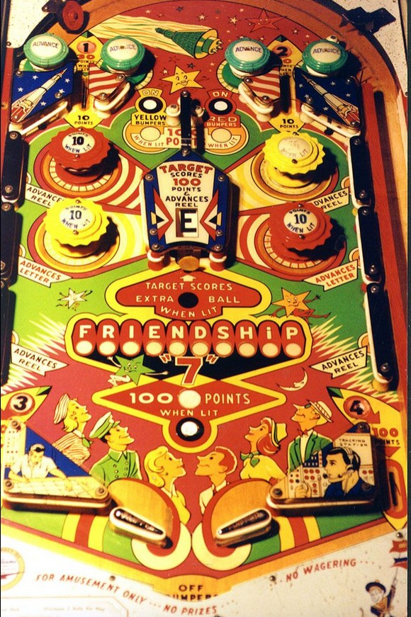

Top lanes can be lit in two ways. If the passive bumpers on either side of a top lane are lit, rolling through that top lane scores 30 points instead of 10. The numbered inserts 1 and 2 form a set with the out lanes, which are numbered 3 and 4; making all of 1-2-3-4 in a game awards an extra ball. The 1-2-3-4 sequence is never reset, so this extra ball can only be earned once per game.
Rollover buttons between the top lanes score no points, but light the yellow (left button) or red (right button) pop bumpers. Pop bumpers score 1 point or 10 when lit, and all lit pop bumpers turn off at the end of any ball. The upper left and lower right pop bumpers are red, while the upper right and lower left are yellow. Between the two upper pop bumpers is a gate which scores 10 points or 100 when lit if the ball passes through it horizontally, and it is lit alternately based on 1-point switch hits. Lighting both the red and yellow pop bumpers at the same time lights the rollover button near the flippers for 100 points.
At any given time, two letters in the word Friendship are selected. The two selected letters are always 5 positions apart, e.g., F and D, or R and S. A "score reel" in the center of the game also displays a letter in the word Friendship. Wall switches along the sides of the game are labelled Advances Reel, Advances Letter, and Advances Reel; any switch labelled Advances Reel changes the letter on the center score reel, and any switch labelled Advances Letter rotates which two letters in Friendship are currently selected. Hitting the center standup target scores 100 points; it also scores 1 extra ball if the letter on the reel is one of the selected letters, then advances the center reel.
There are no in lanes. Flippers back up directly to the slingshots. Out lanes score 100 points and collect the numbers 3 (left) and 4 (right). There is no kickback, free ball gate, or center post.
As an add a ball game, Friendship "7" supports earning multiple extra balls in a single ball in play, with a limit of 10 total balls remaining at any given time. Tilting the game ends the ball in play and also subtracts one further ball from your total. There is no end of ball bonus.
The below picture of Friendship "7"'s playfield was taken from the Internet Pinball Database, where it was originally provided by Alan Tate.
